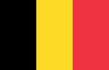
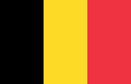

WSTĘGA MÖBIUSA - MATEMATYCZNA TAJEMNICA, KTÓRA ZAFASCYNOWAŁA ŚWIAT
Najbliższy piątek 14 marca to Dzień Liczby PI. Z tej okazji
uczniowie biorący udział w projekcie „STEM in the museum”
przygotowali poniższy artykuł. Autorzy odkrywają przed
czytelnikiem wiele ciekawych faktów związanych z nietuzinkowym
obiektem geometrycznym. Jest to przykład, że świat, który nas
otacza pełen jest obiektów, które można badać, wykorzystując przy
tym metody stosowane w matematyce. Zachęcamy do lektury.
czytaj więcej...